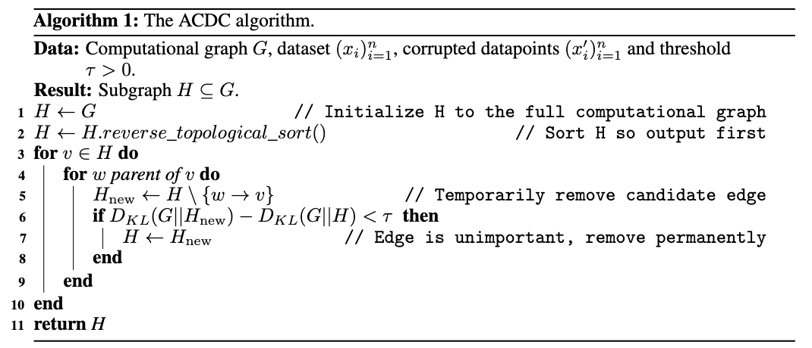
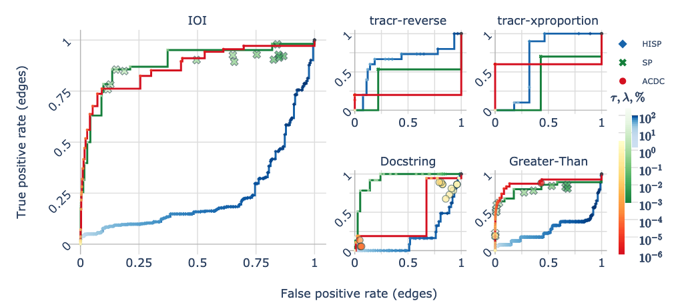
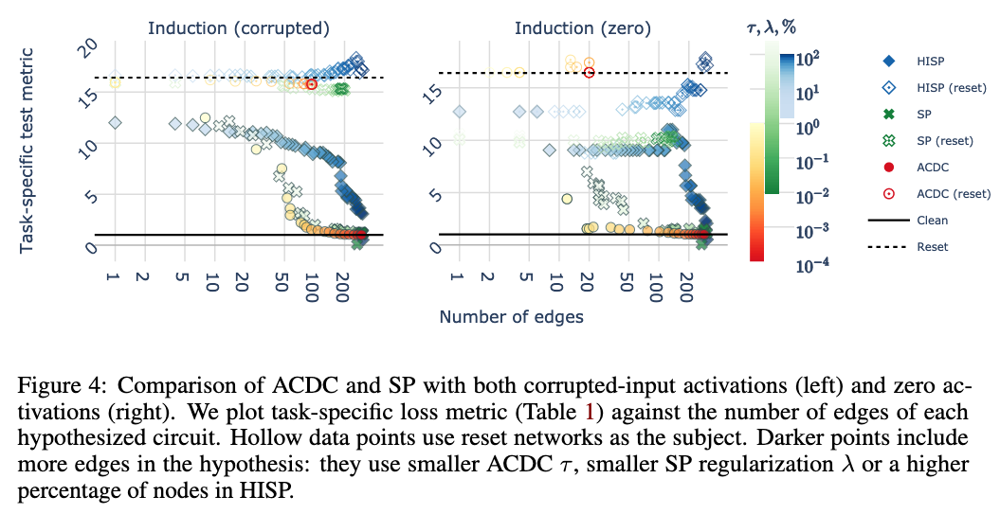
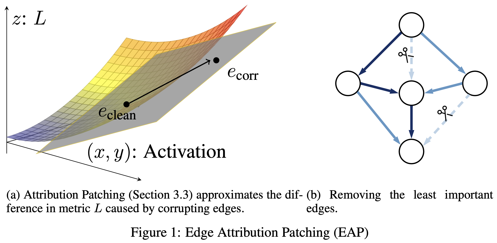
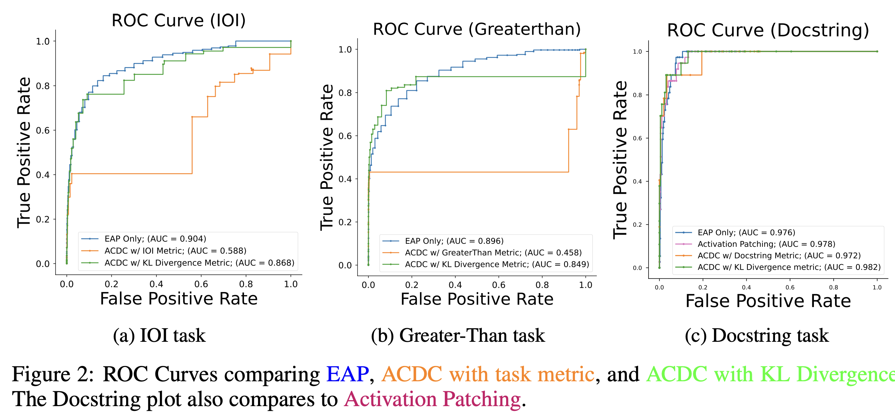
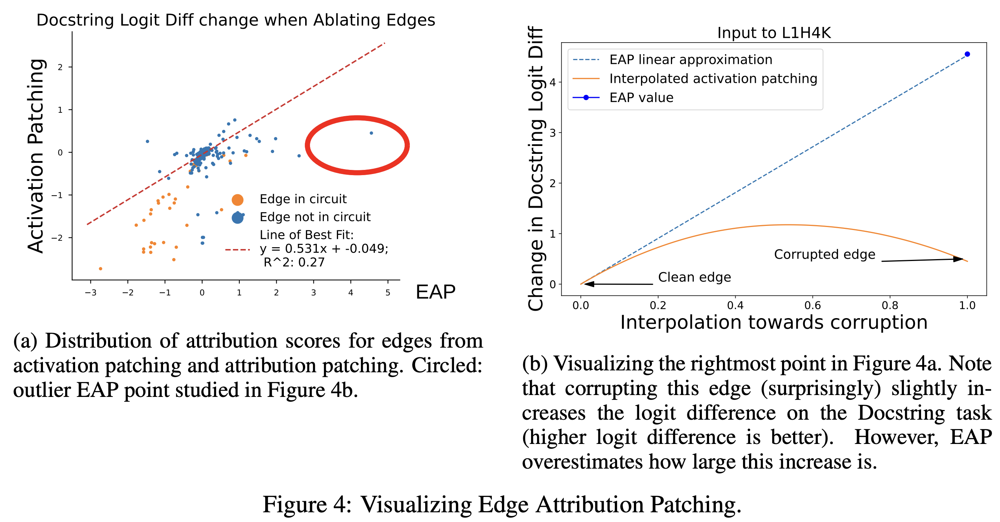
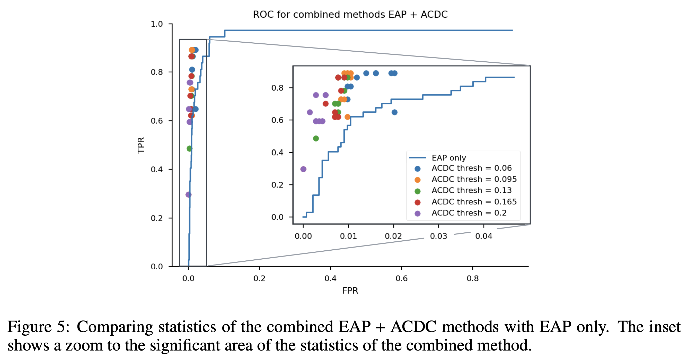

Automatic Circuit Discovery
October 22, 2024 • David Atkinson, Nikhil Prakash
Last week, we discussed three papers which manually found circuits in models. This week, we examine a pair of papers which attempt to automate (part of) this process. The first, Towards Automated Circuit Discovery for Mechanistic Interpretability (Conmy et al., 2023), proposes an iterative pruning algorithm based on activation patching. The second, Attribution Patching Outperforms Automated Circuit Discovery (Syed et al., 2023), proposes a faster alternative to activation patching, called attribution patching.
Towards Automated Circuit Discovery for Mechanistic Interpretability
This paper was published at
NeurIPS 2023.
Arthur Conmy Independent; now a Research Engineer at Google DeepMind
Augustine N. Mavor-Parker UCL PhD student; now at a startup
Aengus Lynch UCL PhD student
Stefan Heimersheim Institute of Astronomy, University of Cambridge; now at Apollo Research
Adrià Garriga-Alonso FAR AI
Much of this work was done during Redwood Research's REMIX program.
- In the first step, researchers identify a (usually simple) task that the model can successfully perform, curate a dataset to elicit the behavior, and choose a metric to measure task success. For example, in the IOI paper, the task is completing sentences with missing indirect objects, the dataset is a set of those sentences, and the metric is logit difference.
- Next, researchers must choose which components of the model are candidates for the circuit. For the attention mechanism, you might choose, for instance, full attention heads, key, query, and value matrices, or even individual attention head output dimensions.
- Finally, researchers use patching to remove model components that are not part of the circuit and see how that affects the task performance metric.
In ACDC, the authors present a simple algorithm to automate this third step.
The ACDC Algorithm
Evaluating ACDC
The authors introduce two baselines: Subnetwork Probing (SP; Cao, Sanh, and Rush 2021) and Head Importance Score for Pruning (HISP; Michel, Levy, and Neubig, 2019). SP optimizes a mask over model components using gradient descent, while HISP uses a first-order Taylor approximation to estimate the effect of replacing a head's output with corrupted inputs.
To evaluate the performance of each candidate algorithm, "ground truth circuits" are used. These are circuits that other researchers have found using manual patching, as well as a new task, Induction:

Specifically, the ROC curve over model edge identification success is used, varying the threshold \(\tau\).
Results
Interestingly, ACDC performs quite poorly on the Docstring and tracr-reverse tasks, and underwhelmingly on tracr-xproportion. Across all tasks, ACDC's AUC is 0.596, which is less than SP's 0.692.
Beyond this main result, another experiment worth highlighting is the authors' use of reset networks, which are networks with permuted query, key, and value matrices. In principle, these networks should have no ability to perform the task, and so any circuit found in them should be spurious. What we see is that SP and HISP do seemingly find circuits with low loss on the task, while ACDC does not.
Discussion
The results are relatively poor, especially compared to subgraph probing. To me (David), the value of ACDC—and the reason it's so well known—has less to do with its proposed algorithm, and much more to do with its framing. The core idea of ACDC is that circuit discovery is automatable, and that we can evaluate automation algorithms with reference to ground truth circuits. That's a claim that has held up reasonably well.
Attribution Patching Outperforms Automated Circuit Discovery
This paper was published in
BlackboxNLP Workshop at EMNLP 2024.
Aaquib Syed Undergrad at University of Maryland, College Park
Can Rager Independent
Authur Conmy Research Engineer at Google DeepMind
Automatic Circuit Discovery (ACDC) algorithm use activation patching to prune out edges from the computation graph to get the circuit responsible for performing a specific task. However, computing the relevance of an edge in the computation graph requires one forward pass, implying the number of forward passes requires to get the entire circuit grows with the size of the model. Hence, making the ACDC algorithm intractable for larger models. One of the alternatives of activation patching is attribution patching, which approximates the impact of activation patching on model's output using the first-order Taylor series. Hence, this work proposes to use attribution patching to estimate the relevance of an edge in the computation graph to speed up the circuit discovery algorithm.
Attribution Patching
 Attribution patching is a technique to estimate the impact of activation patching using only two forward passes and one backward pass. More specifically, it linearly approximates the metric after corrupting a single edge in the computational graph using the first-order Taylor series.
\(L(x_{clean} \vert do(E=e_{corr})) \thickapprox L(x_{clean}) + (e_{corr} - e_{clean})^\intercal \frac{\partial}{\partial e_{clean}}L(x_{clean} \vert do(E=e_{clean}))\)
Edge Attribution Patching
Edge Attribution Patching (EAP) consists of two steps: 1) Use the above equation to obtain attribution scores for the importance of all edges in the computational graph and 2) sort these scores and keep the top k edges to form the circuit.
Results
 Authors assesses the circuits identified using EAP to evaluate its efficicacy. More specifically, authors discovered three circuits Indirect Object Identification (IOI), Docstring, and Greater-than tasks and compared them with the circuits proposed in existing literature. The results indicate that the EAP outperforms ACDC.
How faithful are Attribution Patching's approximations
 Attribution scores are neither correlated to activation scores nor gives good approximation of interpolated activation patching score.
EAP followed by ACDC Performs Better

Code Resources
See this notebook from Arthur Conmy for an example of running ACDC, and here for another Arthur Conmy-authored notebook showing more implementation details.
For EAP, try this colab notebook to identify the IOI circuit with GPT2-small using EAP. You may want to compare it with the colab from previous class and check the efficicacy improvement yourself when using attibution patching over activation patching.